Mr. PinPin / Chapter 1
Complete direct-render review candidate. Fourteen images, original story text, ten character scenes and four unchanged lake closing views. Awaiting your review, not marked artistically approved.
What this pass shows
The direct render gives the faces rounded cheeks and readable expressions without inheriting a blocking maquette. It does not establish reliable control over scale or limb attachments. PinPin is still larger or more upright than requested in several scenes; the early rabbit poses deserve particular scrutiny.
Every character scene starts independently from its clean plate and the same design reference. There is no finishing pass or chain of character edits. The opening was generated twice during this run because the first attempt added rabbits too early; all remaining scenes received one call.
Generation time
327.9 seconds of tool wall time for the ten selected renders: 32.8 seconds per selected image on average. Including the discarded 32.5-second opening attempt: 360.4 seconds across eleven calls. Calls ran sequentially. These figures exclude earlier trials, review and publishing time; they are not a billing measurement.
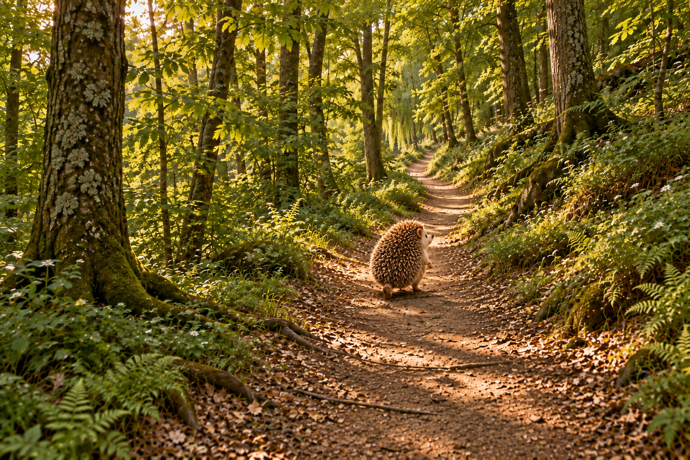
01 / Through the forest
Direction corrected: back toward the camera, heading up the path. Still more upright than a natural walking hedgehog.
Selected render: 30.5 seconds.
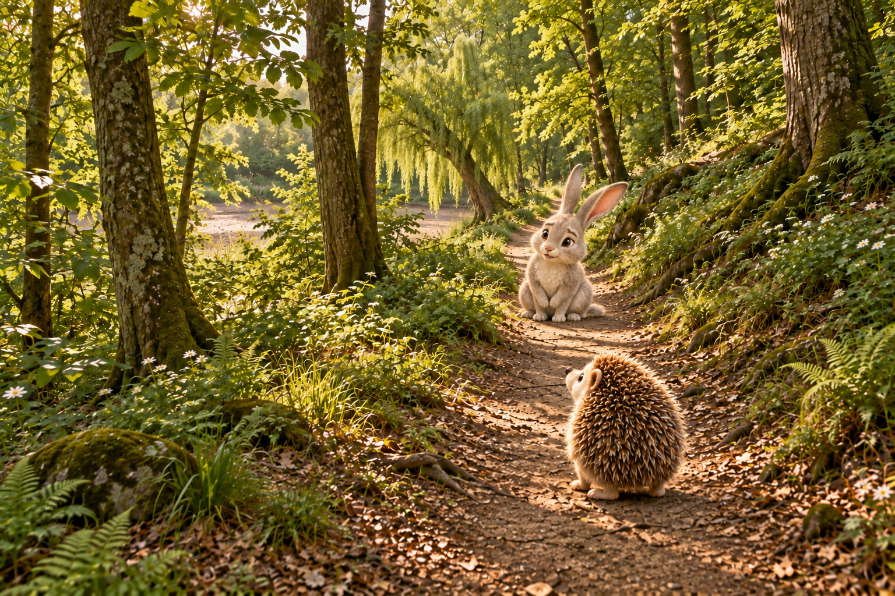
02 / Meeting Lulu
Review Lulu's chest and ground paws closely: raised front paws coexist with several ground paw shapes. This is not an anatomy-approved result.
Selected render: 30.5 seconds.
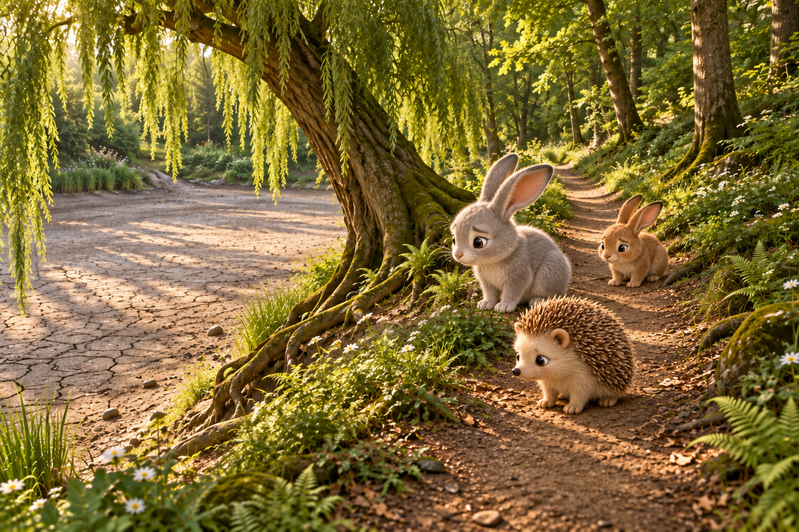
03 / The worried friends
All three friends look toward the dry lake. Character scale is larger than the requested small figures.
Selected render: 51.6 seconds.
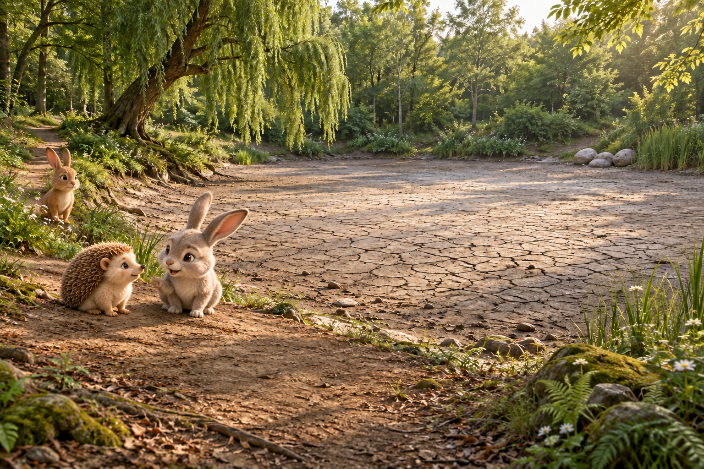
04 / Crystal Lake has dried up
The conversation is readable. Lulu's raised paw and ground-level paws need another anatomy review.
Selected render: 36.6 seconds.
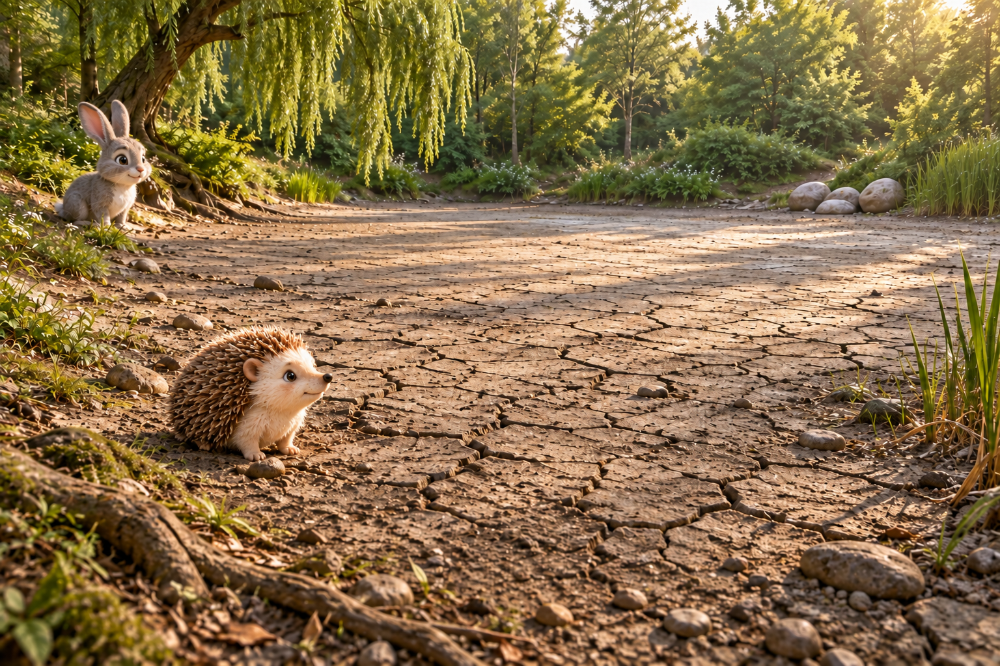
05 / An idea beside the lake
Thoughtful low stance. PinPin remains larger in frame than requested.
Selected render: 28.9 seconds.
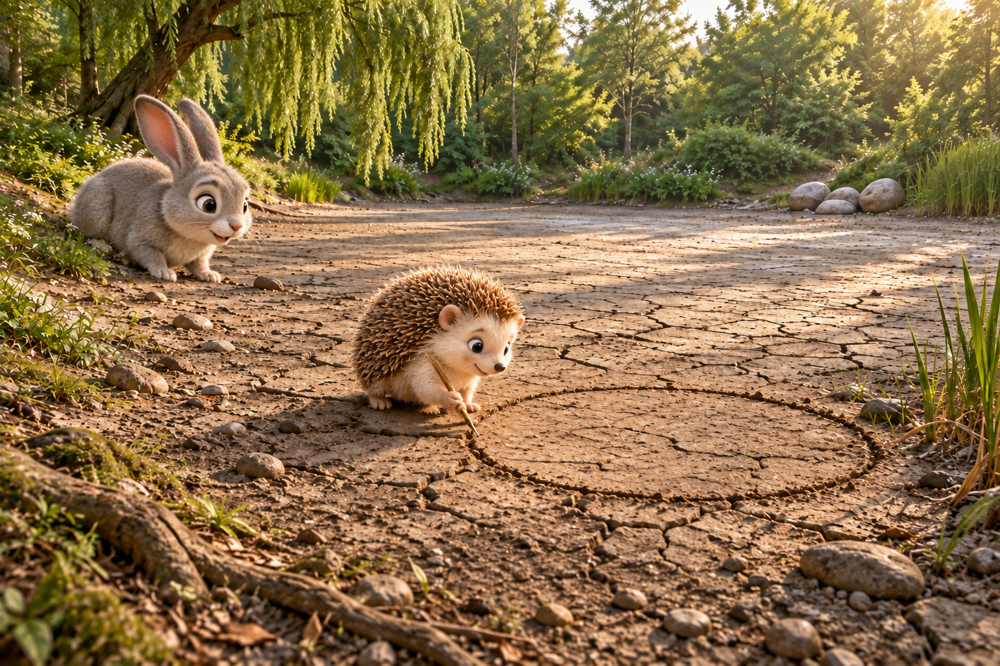
06 / Drawing the circle
Drawing action is readable. The circle and quill sizes should be compared with the following water shot.
Selected render: 32.4 seconds.
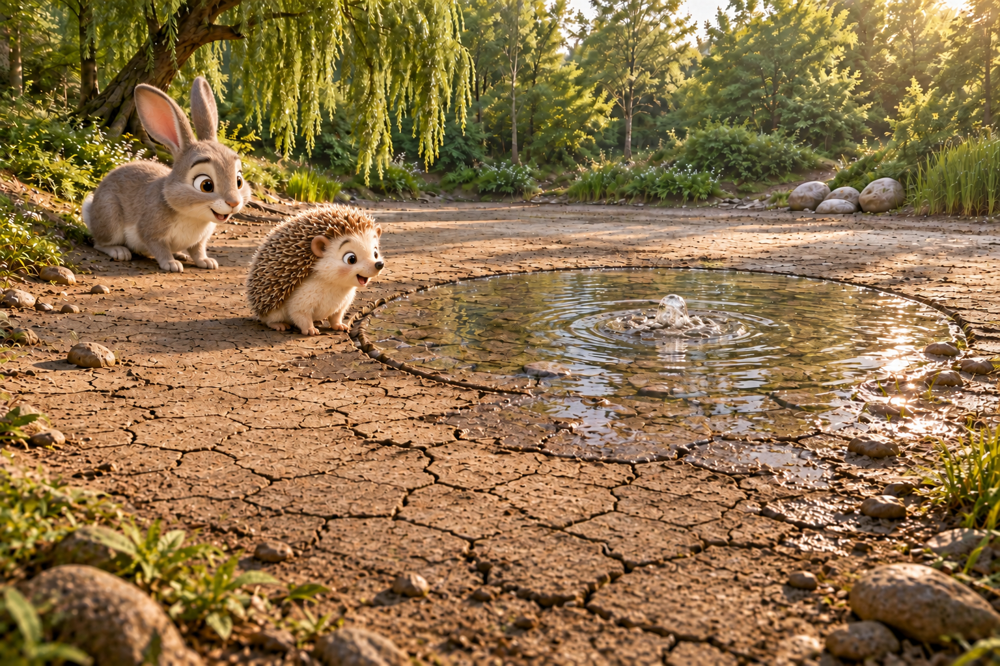
07 / The first water
First water is unobstructed. The quill is no longer visible; continuity is not fully locked.
Selected render: 28.3 seconds.
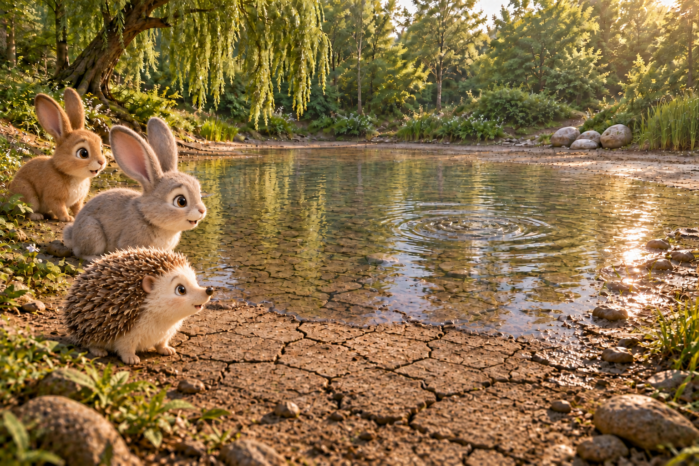
08 / Water spreading
Water progression reads clearly. Several far-side limbs are occluded, so I cannot certify all attachments.
Selected render: 29.2 seconds.
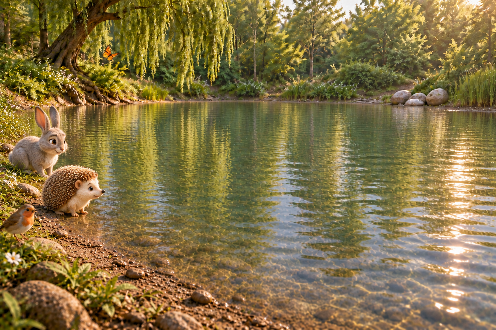
09 / At the water's edge
The model added a bird and butterfly not requested in this shot.
Selected render: 29.8 seconds.
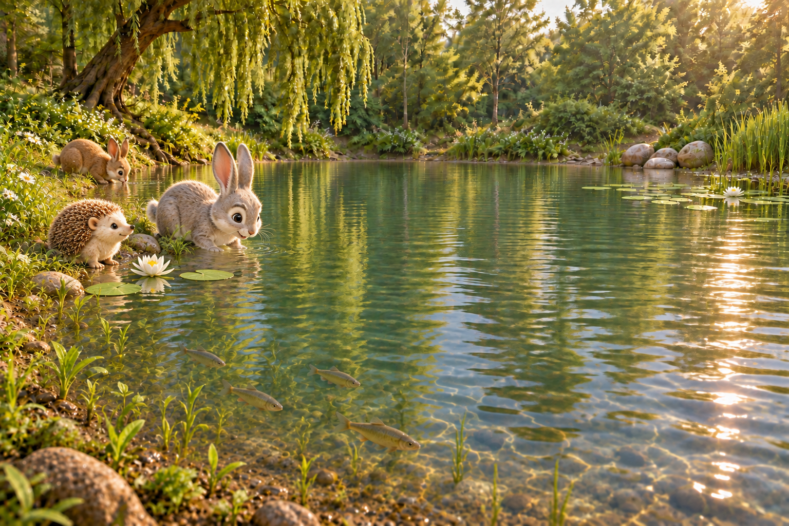
10 / The lake restored
The three friends occupy the shoreline, with lilies and fish retained.
Selected render: 30.3 seconds.

11 / Below the surface
Existing fish-only closing plate, unchanged.
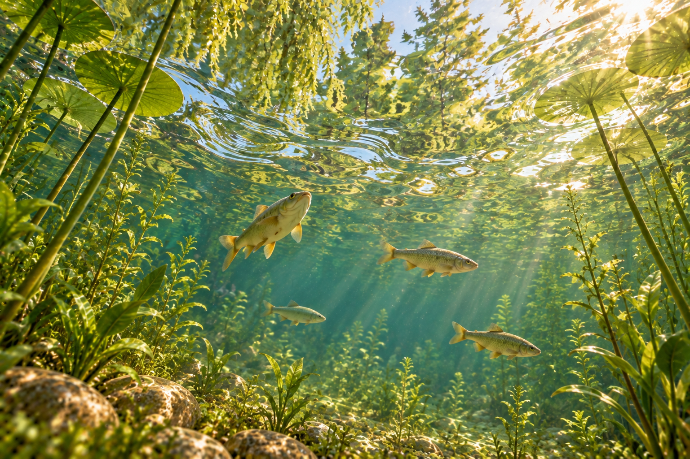
12 / Looking upward
Existing upward underwater view, unchanged.
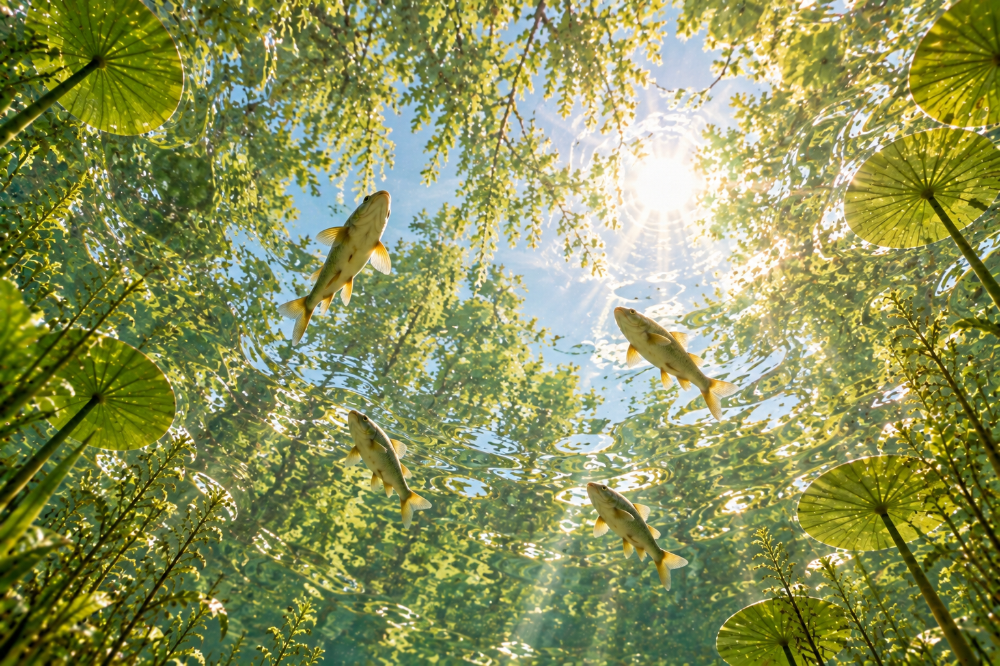
13 / Toward the sun
Existing near-vertical sunlight view, unchanged.
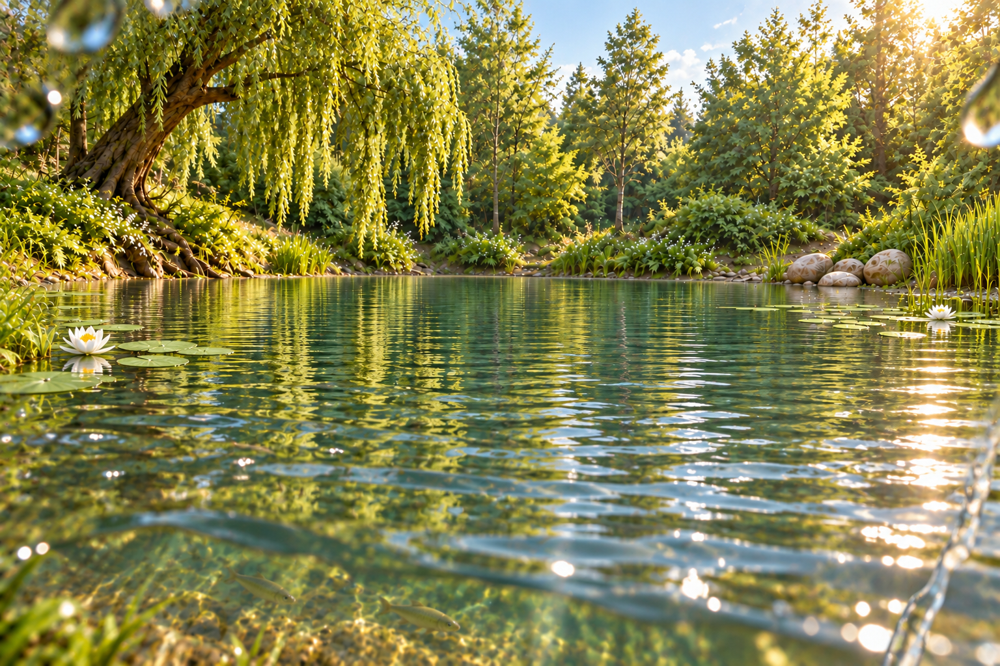
14 / Above the water
Existing resurfacing view with water droplets, unchanged.